VIBH2O · projet LUX · Unreal 5.8 · version du 26 octobre 2026
Manuel de l'opérateur
Tout ce qu'il faut pour mettre en place et jouer VIBH2O seul : où cliquer, ce qu'on doit voir, et quoi faire quand ce n'est pas le cas. Chaque capture a été prise dans le projet du spectacle avec la version installée.
D:\VIBH2O\09-2026\VIBH2O_LUX\VIBH2O\VIBH2O.uproject — carte de travail : MAPS/VIBH2o_PPCM_Fond
Avant chaque représentation
Deux boutons font l'essentiel. Ils sont en haut du panneau Details de l'acteur VibH2O_Stage (dossier VibH2O de l'Outliner).
- Remettre en état de début de spectacle — tableau 1, pas de focus, ambiance automatique, attracteurs relâchés, zones allumées et recentrées, fond présent. Puis enregistrer la carte.
- Vérifier avant la représentation — une fenêtre liste ce qui surprendrait : simulateur qui démarre seul, zone éteinte, attracteur actif, fond enlevé, ambiance forcée, trop de bulles, log OSC trop bavard. « Tout est prêt pour la représentation » : c'est bon.
- Max envoie ses données en OSC sur le port
9002de ce PC. En Play, la pastille de l'iPad passe à MAX (vert). - Le simulateur ne démarre pas seul : dans VibH2O_Simulateur, Simuler au lancement décoché, ou acteur supprimé. Il se tait de toute façon dès que Max parle (Se taire dès que Max parle).
- L'iPad affiche la télécommande et la pastille verte « connecté ». Verrouille-la (🔒) avant le début.
- Resolume reçoit le flux Spout ; la fenêtre Unreal n'est pas réduite (derrière Resolume, ou sur un autre écran).
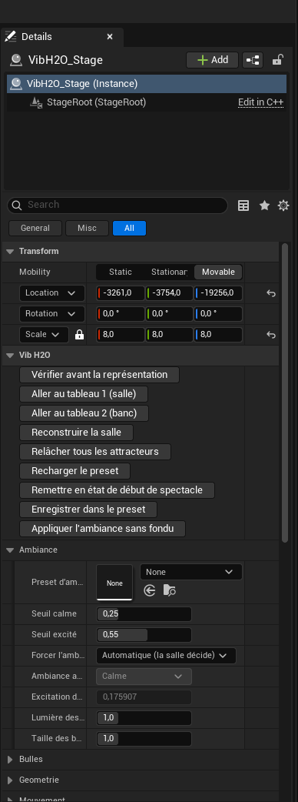
Ouvrir et regarder
- Ouvre VIBH2O.uproject (Unreal 5.8), puis la carte MAPS/VIBH2o_PPCM_Fond.
- Si la vue est toute blanche : ce n'est pas l'éclairage, c'est la caméra de l'éditeur, posée au-dessus de la surface. Double-clique sur VibH2O_Stage dans l'Outliner (ou sélectionne-le et appuie sur F), puis recule à la molette. Ctrl+1 mémorise cette vue, 1 la rappelle.
- Pour voir exactement l'image du spectacle : menu Perspective du viewport → Cameras → la caméra du rail ; ou Play.
- Menu Lit → Exposure : Game Settings coché, sinon l'exposition n'est pas celle du spectacle.
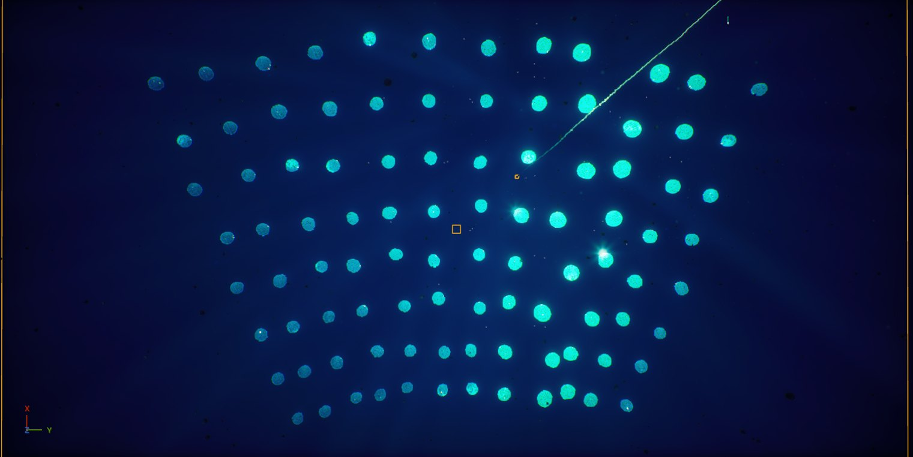
Le panneau Details
Tous les acteurs VibH2O sont rangés pareil, pour qu'on s'y retrouve dans le noir :
- En haut, « Vib H2O » : les boutons d'action de l'acteur (classés par ordre alphabétique).
- Juste dessous : la catégorie principale, déjà dépliée (Ambiance, Fond, Simulation, Pilotage…).
- Les réglages fins sont sous la petite flèche « Avancé » en bas de chaque catégorie. On n'y touche qu'en connaissance de cause.
- Survole un réglage : une bulle d'aide en français dit ce qu'il change à l'écran.
- Les curseurs ont des bornes : impossible de casser l'image avec une valeur absurde.
Le fond en un clic
L'acteur VibH2O_Fond (dossier Fond) fait disparaître l'environnement sous-marin en fondu vers le noir pur. Les bulles restent. Sur le tulle, le noir est transparent : on voit alors la scène derrière.
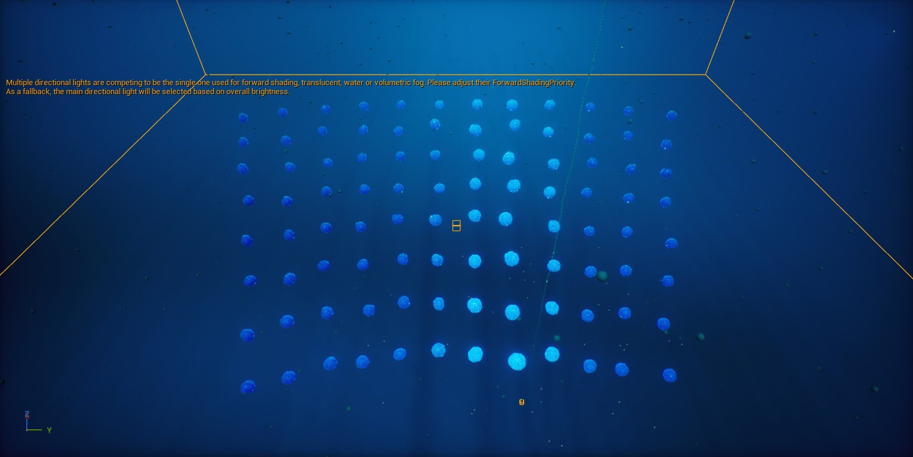
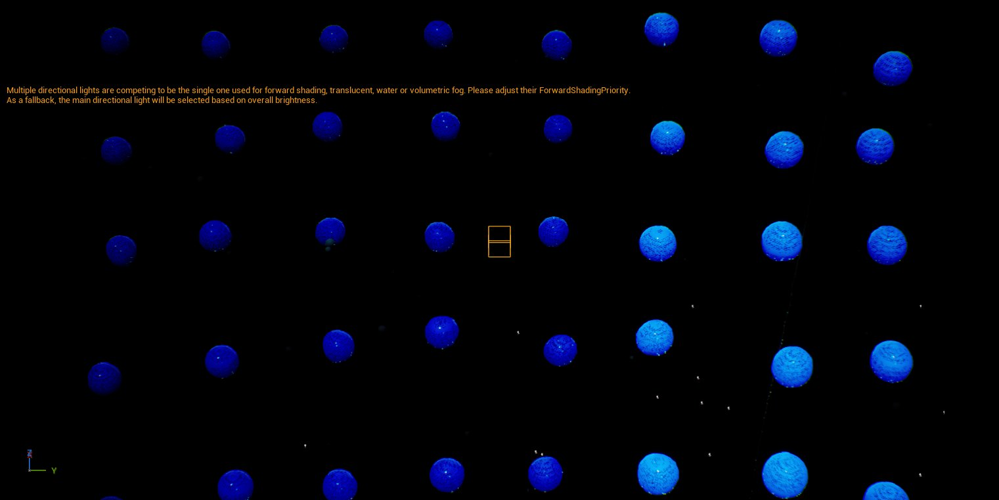
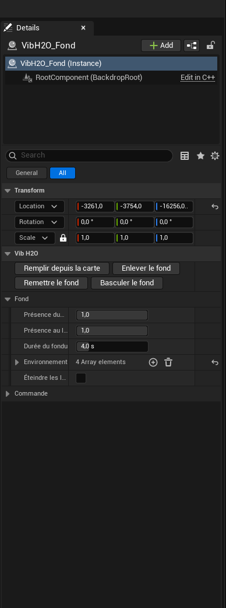
| Pour… | Fais |
|---|---|
| Enlever / remettre dans l'éditeur | Boutons Enlever le fond, Remettre le fond ou Basculer le fond. |
| Pendant le spectacle | Bouton Fond de l'iPad (maintenir pour passer au noir), ou une cue Resolume qui envoie /Fond 0 / /Fond 1, ou la touche B si Unreal a le focus. |
| Dans Sequencer | Ajoute VibH2O_Fond, piste Présence du fond (0 = noir, 1 = eau). |
| Changer la durée | Durée du fondu (4 s par défaut, 0 = coupe sèche). Un message OSC peut en donner une autre : /Fond 0 2 = noir en 2 s. |
| Couper aussi les lumières | Coche Éteindre les lumières. |
| État au lancement | Présence au lancement = 1 : chaque Play commence avec le fond, même si la carte a été enregistrée au noir. |
Les réglages de l'eau elle-même sont dans les acteurs du dossier Fond : VibH2O_Eau (brouillard : densité, couleurs du lointain), VibH2O_Soleil (inclinaison, rayons, caustiques), VibH2O_Particules (Nombre, Taille min/Taille max, Courant (tours/s)).
Les trois ambiances
La salle passe d'elle-même en calme, normal ou excité selon l'écart moyen du public à sa baseline. La synchronie est un axe à part : on peut être synchrones dans le calme comme dans l'excitation (elle aligne les stries et resserre les teintes).
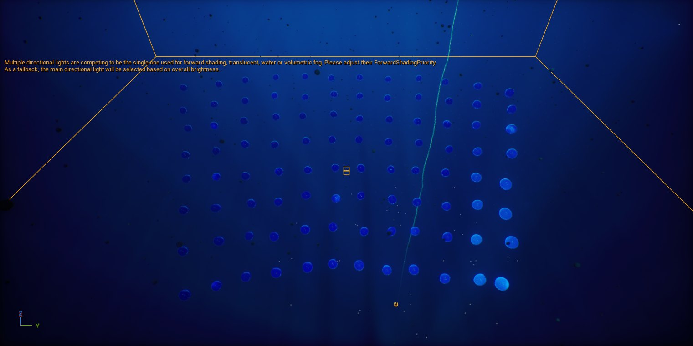
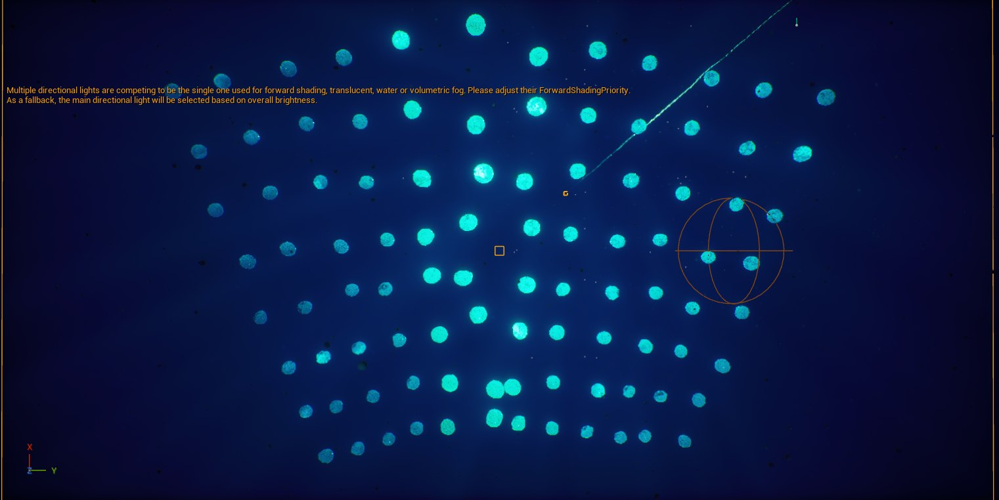
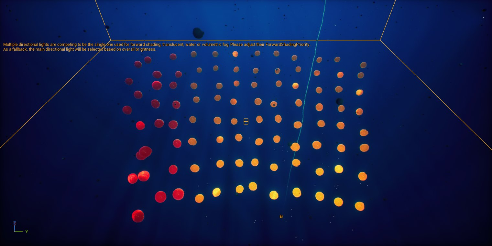
| Réglage (VibH2O_Stage → Ambiance) | Ce qu'il fait |
|---|---|
| Excitation de la salle | La mesure en direct (0 à 1). Règle les seuils en la regardant. |
| Seuil calme / Seuil excité | Sous 0,25 : calme. Au-dessus de 0,55 : excité. Une marge évite le clignotement à la frontière. |
| Forcer l'ambiance | Automatique (la salle décide) ou forcé : calme / normal / excité. Aussi depuis l'iPad, section Ambiance. |
| Lumière des bulles | À monter si les bulles se fondent dans l'eau, à baisser si elles brûlent en blanc. |
| Taille des bulles | Taille au repos. |
| Preset d'ambiance | Les couleurs des trois ambiances. Glisse un preset (DA_VibH2O_Ambiance_Aqua, _FroidChaud) ; Enregistrer dans le preset sauve tes réglages, Recharger le preset les annule. |
| Palettes par ambiance (Avancé) | Chaque couleur, la vitesse des stries, le flottement et la taille de chaque ambiance. Animable dans Sequencer. |
Pour voir les ambiances changer seules : sélectionne VibH2O_Simulateur, Scénario = « Vague collective : calme, normal, excité ». Le bouton Appliquer l'ambiance sans fondu saute la bascule de 4 s.
Tableau 2 : division et vortex
Le passage du plan de salle au banc est un curseur continu, réversible, qu'on peut arrêter à mi-chemin : Tableau : salle (0) → banc (1). Au début du passage, chaque bulle se divise en plusieurs sœurs (même cœur, même couleur) ; puis les familles rejoignent le banc. En synchronie, le banc tourne en vortex ; hors synchronie, il s'éparpille en restant lisible.
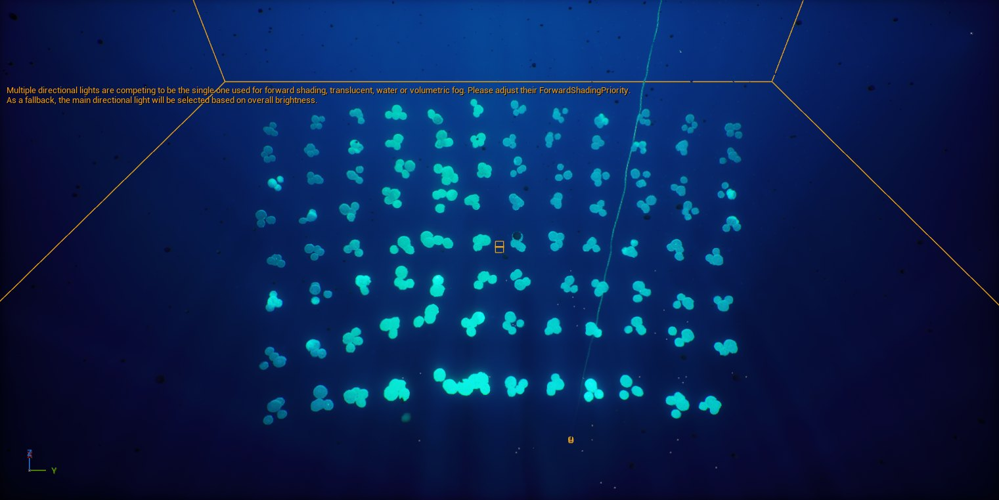
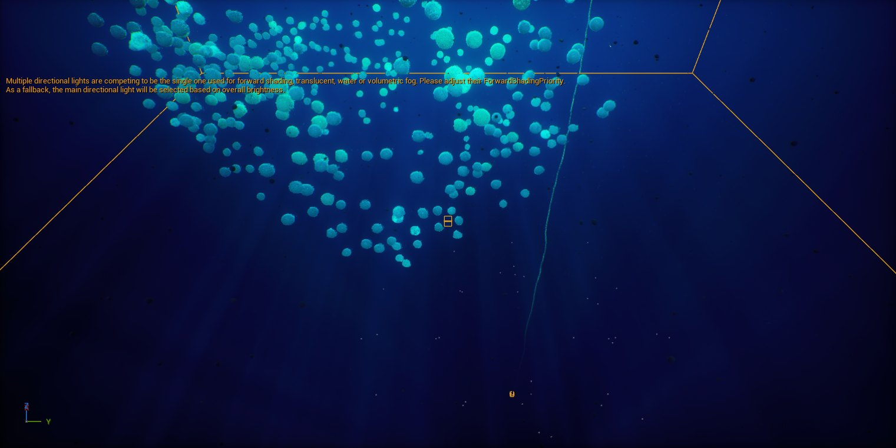
| Pour… | Fais |
|---|---|
| Passer d'un tableau à l'autre | Boutons Aller au tableau 2 (banc) / Aller au tableau 1 (salle) ; iPad « → Banc » / « → Salle » ; cue Resolume ; ou Sequencer sur le curseur. |
| Régler la vitesse du passage commandé | Transition commandée : durée (6 s). Vaut pour l'iPad, Max et les cues ; Sequencer garde la main sur sa courbe. |
| Plus ou moins de bulles au banc | Filles par bulle (3 : chaque bulle devient 4). 176 places × 4 = 704 bulles : si l'image rame, baisse. |
| Quand le vortex se forme | Synchronie : dispersion sous (0,35) et Synchronie : vortex au-dessus de (0,70). |
| Forme du vortex | Vortex : hauteur, Vortex : rayon en bas, Vortex : rayon en haut, Vortex : décalage vertical, Vortex : sens de rotation. |
Is Daughter.Attracteurs
Un attracteur appelle une partie des bulles vers une zone choisie, en douceur, puis les renvoie à leur place exacte. Les pilotes de base ne s'arrêtent jamais : le retour est toujours juste.
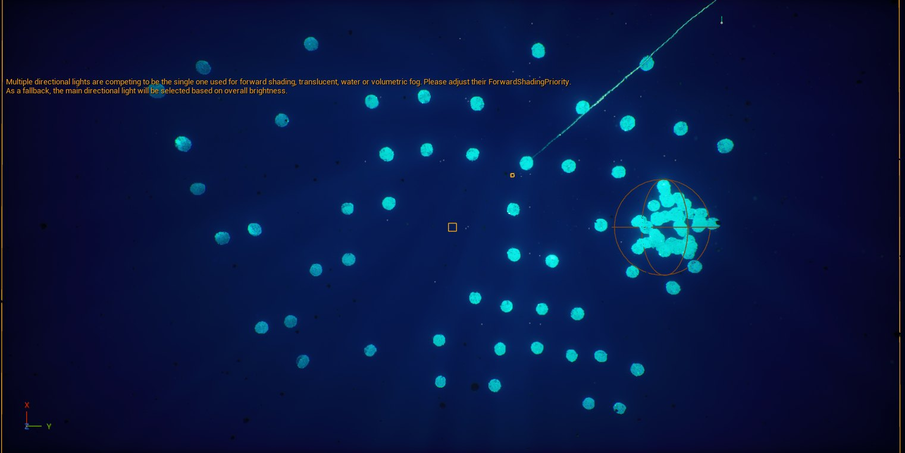
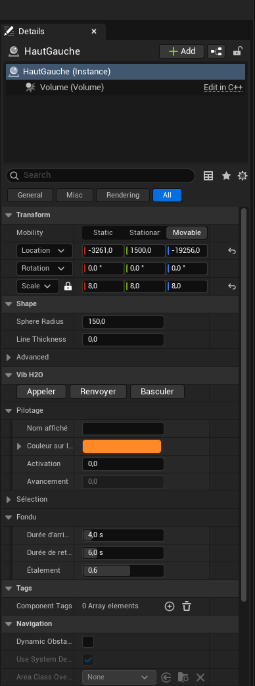
- Place Actors (bouton ➕ de la barre d'outils) → cherche « Attracteur » → glisse VibH2O — Attracteur dans la salle. Sa taille : Shape → Sphere Radius (et l'échelle de l'acteur).
- Donne-lui un nom d'acteur parlant (« HautGauche ») : c'est lui que l'iPad affiche. Nom affiché et Couleur sur l'iPad permettent de les distinguer dans le noir.
- Règle Part des bulles (0,3 = 30 % de la salle) et, pour partager la salle entre deux attracteurs, Début de la part.
- Teste avec Appeler et Renvoyer. Durée d'arrivée / Durée de retour règlent la douceur ; Étalement fait partir les bulles les unes après les autres.
Zones d'exclusion
Une zone protège un espace où les bulles ne doivent pas passer : devant une circassienne, sur le tulle. Elle se place à la main et se déplace en direct depuis l'iPad.
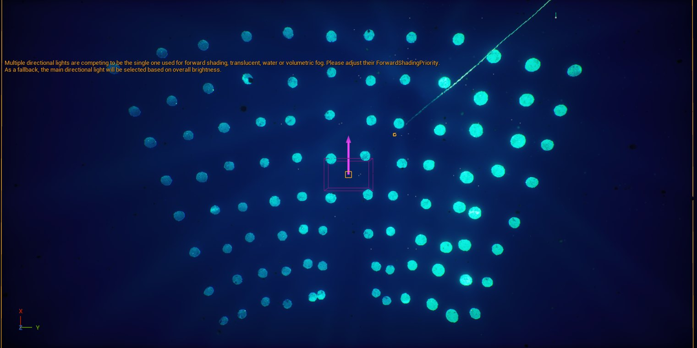
- Place Actors → cherche « Zone » → VibH2O — Zone d'exclusion.
- Sa taille : Demi-largeur, demi-hauteur (catégorie Forme) ; sa forme : Forme (ellipse ou rectangle arrondi) ; Marge douce écarte un peu plus.
- Oriente sa flèche vers la caméra du spectacle et désigne la Caméra de projection : la zone protège alors tout ce qui est entre la caméra et l'artiste.
- Dans l'iPad, la zone se fait glisser du doigt dans la limite de Amplitude (demi-largeur, demi-hauteur). Gauche et droite inversés ? Coche Inverser gauche / droite.
- Recentrer la remet à sa place ; Basculer l'allume ou l'éteint.
La télécommande iPad
Unreal sert lui-même la page de commande. Rien à installer.
- iPad et PC sur le même Wi-Fi (ou le PC en filaire sur le même routeur).
- Lance Play (ou Standalone Game). Le log Unreal écrit l'adresse :
VibH2O: telecommande iPad — ouvrir http://192.168.1.12:8642/ dans Safari. - Au premier lancement, Windows demande d'autoriser Unreal sur le réseau : réseaux privés : oui. C'est la panne n° 1.
- Sur l'iPad : Safari → l'adresse → Partager → Sur l'écran d'accueil. L'icône ouvre ensuite la télécommande en plein écran.
- Pour le spectacle : Réglages → Luminosité → Verrouillage automatique : Jamais.
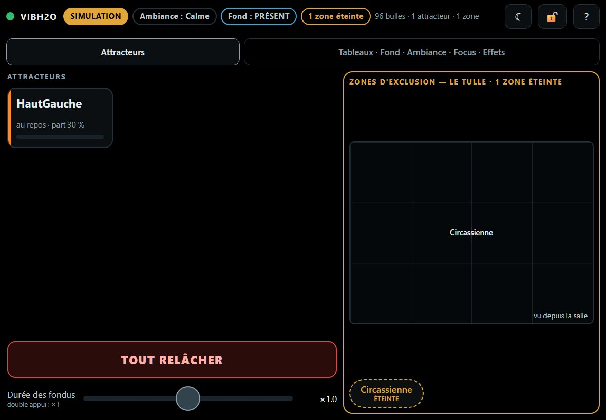
| Élément | Comportement |
|---|---|
| Pastilles d'en-tête | MAX (vert) : les vraies données arrivent. SIMULATION (orange, clignote) : public simulé. AUCUNE DONNÉE (rouge). Puis l'ambiance, l'état du fond, les zones éteintes. |
| Appui simple | Allume : appeler un attracteur, remettre le fond, allumer une zone ou un effet. |
| Appui maintenu (anneau) | Éteint : passer le fond au noir, éteindre une zone, couper un effet. Relâcher trop tôt n'envoie rien. |
| → Salle / → Banc | Passe d'un tableau à l'autre en douceur. Le curseur manuel est derrière « Déverrouiller le curseur ». |
| Ambiance | Auto / Calme / Normal / Excité. |
| TOUT RELÂCHER | Tous les attracteurs rentrent. La sortie de secours. |
| 🔒 | Un appui verrouille ; maintenir 1,5 s déverrouille. Rien ne part tant que c'est verrouillé. |
| ☾ | Mode nuit lisible, mémorisé. |
| Bandeau rouge | « Commande non reçue » : Wi-Fi, pare-feu ou jeu arrêté. La touche revient à l'état réel. |
Piloter depuis Resolume
Tu restes dans Resolume ; Unreal suit. Le plus simple : Resolume envoie de l'OSC à Unreal quand tu lances une colonne.
- Resolume → Preferences → OSC : OSC Output coché, destination Localhost, port 9002.
- Place un VibH2O — Directeur de cues dans la carte (Place Actors → « cues »).
- Dans son panneau, ajoute une cue : Nom (ex. « Vortex »), Source = OSC, Action (ex. « Tableau - Régler salle → banc », « Séquence - Lancer »…).
- Dans Resolume (Shortcuts → Edit OSC), donne à la colonne la Custom Address
/Cue/Vortex: la cue nommée « Vortex » se déclenche, rien à apprendre. - Sinon : choisis la cue dans Cue à apprendre (-1 = nouvelle), clique Apprendre, et lance la colonne ou appuie sur le pad MIDI.
- En Play, teste avec Cue à tester + Déclencher la cue choisie.
| Entrée | Unreal en arrière-plan ? |
|---|---|
| OSC (Resolume, Max, iPad) | Oui, toujours. |
MIDI via loopMIDI (port nommé VibH2O) | Oui. Project Settings → Plugins → VibH2O → Cues → Entrées MIDI. |
| Clavier | Seulement si Lire le clavier en arrière-plan est coché (désactivé par défaut : la touche part aussi à Resolume). |
Max et le simulateur
Max envoie le plan de salle, les BPM, l'excitation et la synchronie en OSC sur le port 9002. Le simulateur remplace Max pour répéter.
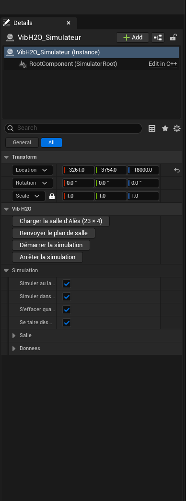
| Réglage | Usage |
|---|---|
| Scénario | Nominal, Vague d'excitation, Balayage de synchronie, Pic collectif, Coupure de capteurs, Vague collective (calme → excité). |
| Colonnes / Rangées | Taille de la salle simulée. Bouton Charger la salle d'Alès (23 × 4) pour le vrai plan. |
| Simuler dans l'éditeur | Les bulles vivent sans Play. |
| Simuler au lancement | À décocher dans la carte du spectacle. |
| Se taire dès que Max parle | Dès que de vraies données arrivent, le simulateur s'arrête jusqu'à la fin de la partie. À laisser coché. |
Réglages réseau : Edit → Project Settings → Plugins → VibH2O : Port d'écoute OSC, Ordre des sièges, Excitation reçue : min/max, BPM plausible : min/max, Capteur muet après. Pris en compte au prochain Play (ou commande VibH2O.Restart).
Spout vers Resolume
Le plugin SpoutUE (version du 24 octobre, source caméra active) envoie l'image finale de la caméra du jeu, avec tous ses post-process, vers Resolume. Dans Resolume, le flux apparaît dans les sources Spout. Pour garantir l'image exacte, utilise la source caméra active (ou viewport), pas une SceneCapture.
Pluie, point clouds, arbre
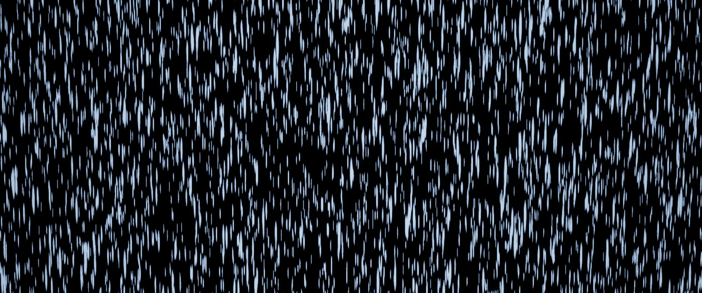
Densite, Vitesse, Taille, Couleur, Lueur…).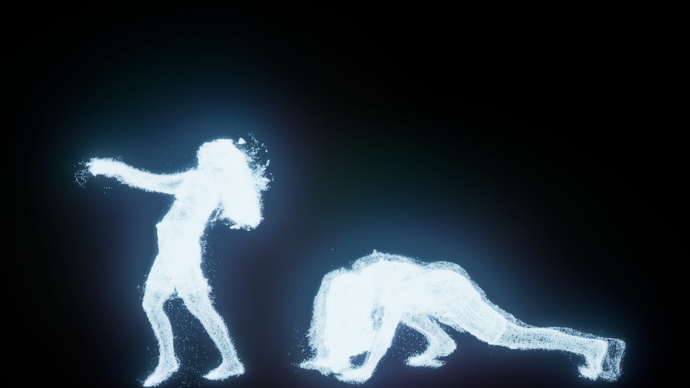
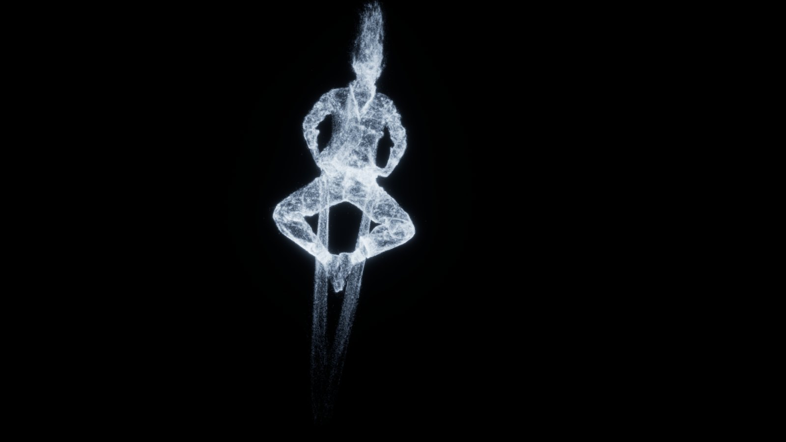
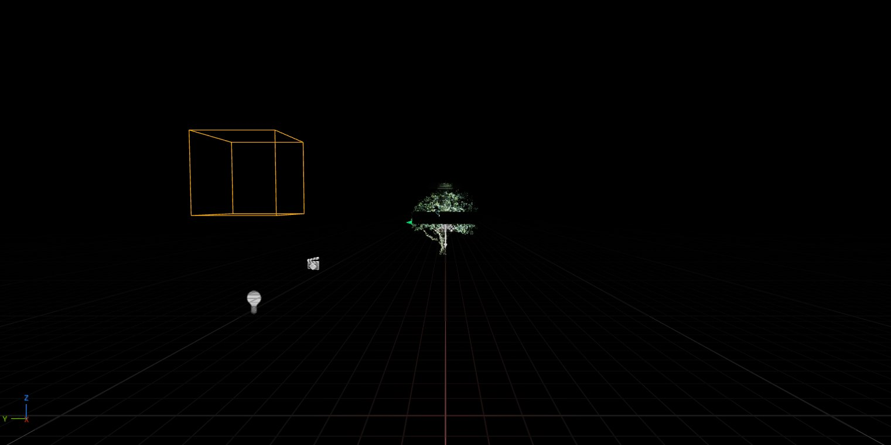
_ARCHIVE. MAPS/TESTS/TREE_Number n'affiche rien (mesh corrompu). /Game/KatjaDissolveFORVIDEO (à la racine) a perdu ses systèmes Niagara. Ne jamais enregistrer d'asset dans un dossier de plugin : il disparaît à la réinstallation.La pluie dans Sequencer : ouvre SEQ_Pluie_Demo, sur l'acteur Pluie ajoute une piste de paramètre (Densite, Lueur…) et anime-la.
Dépannage
| Symptôme | Cause et solution |
|---|---|
| Vue toute blanche, surexposée | La caméra de l'éditeur est au-dessus de la surface. Double-clic sur VibH2O_Stage, ou pilote la caméra du rail. Lit → Exposure → Game Settings. |
| Unreal plantait à l'arrêt du Play | Corrigé le 25 octobre. Si un crash revient, note la carte et l'heure : le rapport est dans Saved/Crashes. |
| Max envoie mais rien ne bouge | Dans les cartes issues de VIBH2o_PPCM, l'ancien Matrix_Controller_BP écoute aussi le port 9002 sur l'adresse 192.168.3.246 et peut capter le flux. Supprime-le de la carte utilisée, ou change le Port d'écoute OSC de VibH2O et l'envoi de Max. |
| iPad : point rouge, page qui ne charge pas | Pas le même Wi-Fi, pare-feu Windows (autoriser Unreal sur réseau privé), jeu arrêté, ou l'adresse du PC a changé (relire le log). |
| iPad : un appui ne fait rien | Verrouillé (🔒) ; ou bandeau « Contrôle coupé dans Unreal » : console VibH2O.IgnoreControl 0 ; ou la tuile dit « piloté par Sequencer ». |
| Pastille SIMULATION en représentation | Max n'envoie rien sur 9002. Vérifie Max, le réseau et le port. |
| Bulles qui passent devant une artiste | Zone éteinte, trop petite, ou flèche mal orientée / caméra de projection non désignée. |
| Image qui rame au tableau 2 | Baisse Filles par bulle (2 ou 1). |
| Spout saccadé | Fenêtre Unreal réduite : la remettre, derrière Resolume. |
| Une cue ne part pas | Le nom dans /Cue/<Nom> doit être celui de la cue ; la cue doit être Active ; en MIDI, le port loopMIDI doit être lancé. |
Commandes console utiles (touche ² en Play) : VibH2O.ShowDebug (réseau, salle, iPad, cues à l'écran), VibH2O.DumpRoom, VibH2O.Restart, VibH2O.Cue Vortex, VibH2O.Midi, VibH2O.IgnoreControl 0|1.
Où sont les fichiers
| Quoi | Où |
|---|---|
| Projet du spectacle | D:\VIBH2O\09-2026\VIBH2O_LUX\VIBH2O |
| Assets rangés (rien de supprimé) | Content/_ARCHIVE — même arborescence qu'avant |
| Sauvegardes du projet | D:\VIBH2O\09-2026\_SAUVEGARDE_LUX_2026-10-24_avant_archivage, …_2026-10-25_avant_reprise_archivage |
| Anciens plugins | D:\VIBH2O\09-2026\_SAUVEGARDE_PLUGINS_2026-10-24 |
| Code du plugin VibH2O | Documents\GitHub\VIBH2O_UE (branche main) — docs/ : TUTORIEL, CUES, ATTRACTEURS_ET_IPAD, DECISIONS_NUIT |
| Rapports de la nuit | VIBH2O_LUX\VIBH2O\_RAPPORT_CLAUDE |
| Page de la télécommande | Plugins/VibH2O/Resources/Remote/index.html |